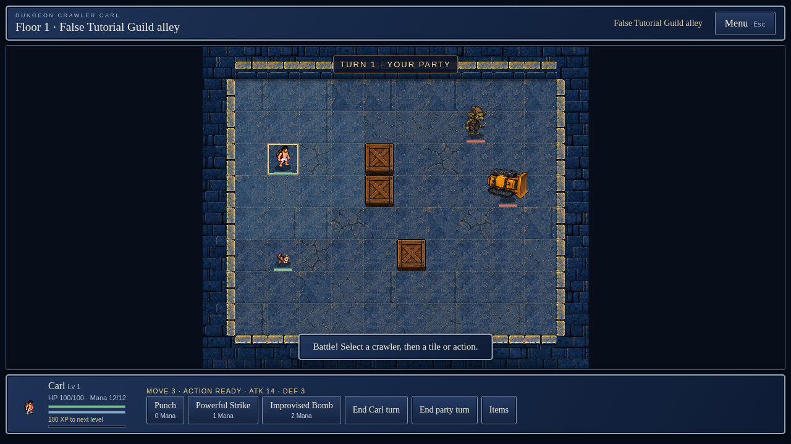
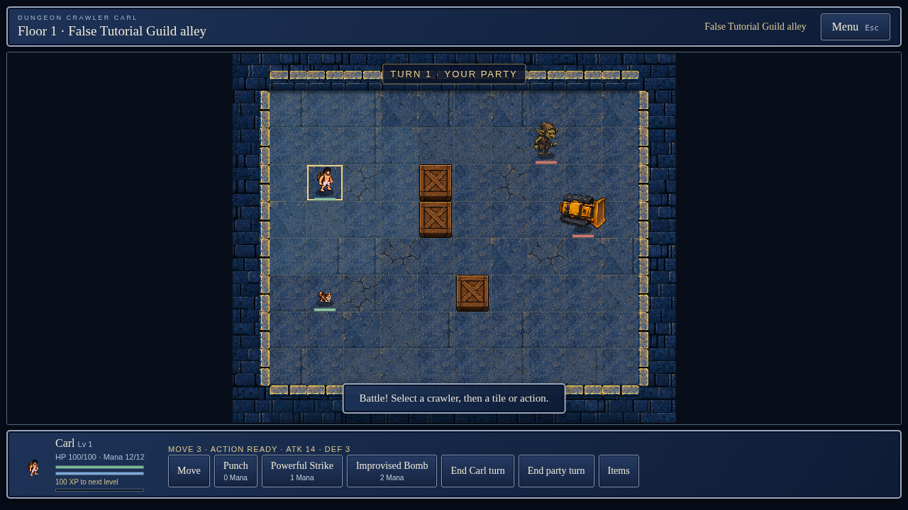
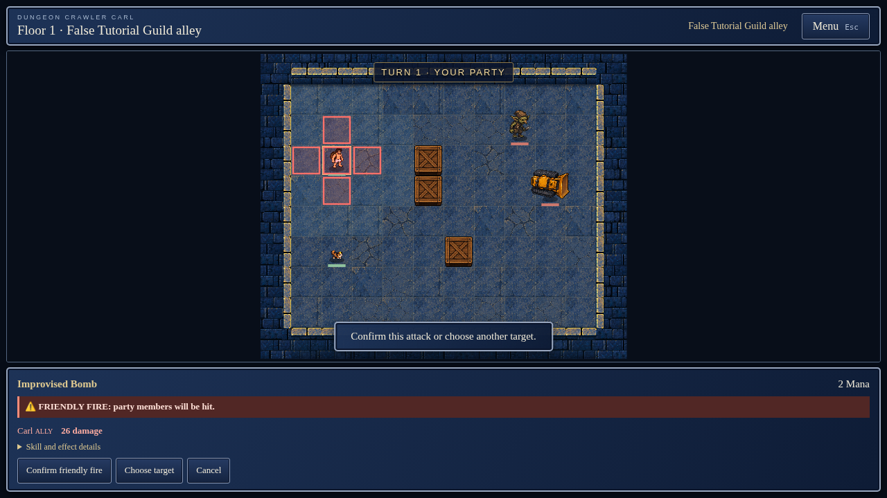
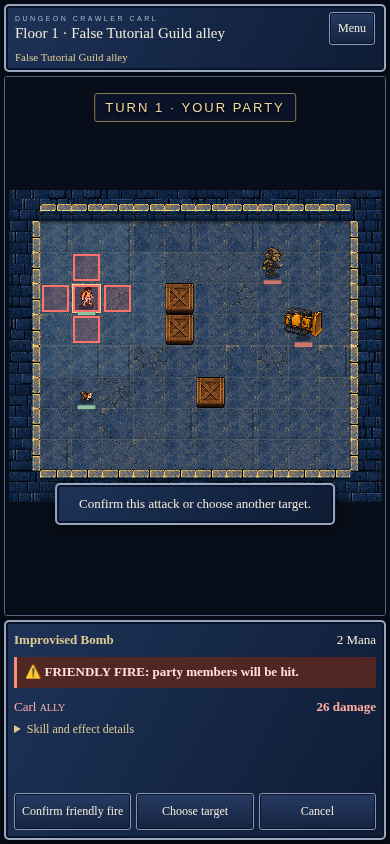
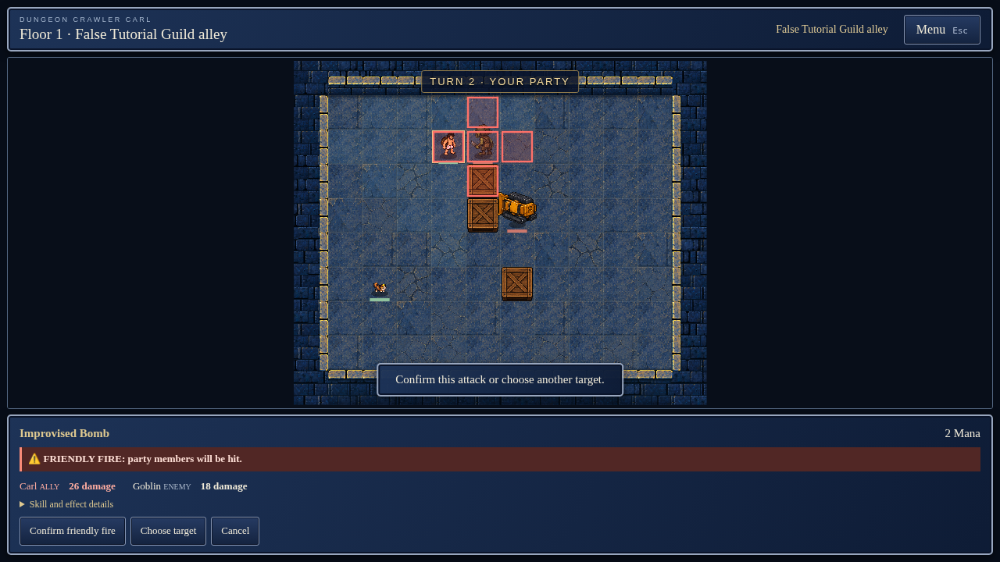
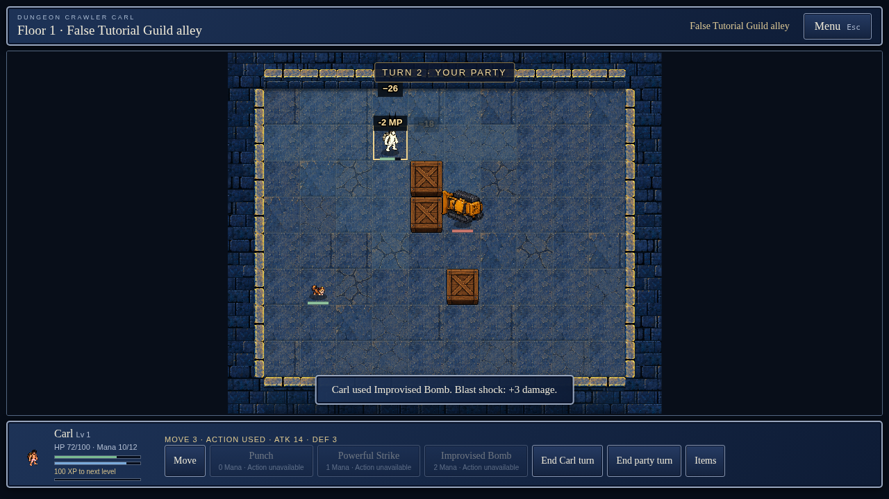
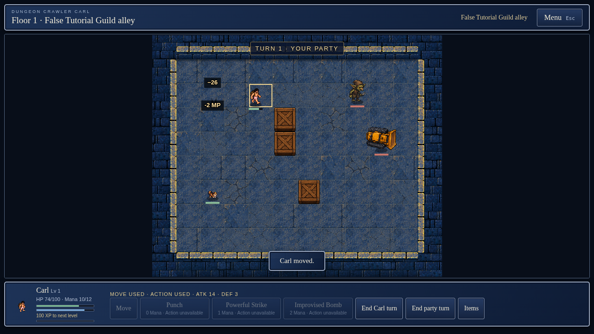

Real keyboard and pointer gameplay on the published .NET WebAssembly host. Desktop 1280×720; mobile 390×844. No gameplay state, commands or saved fixtures were injected in final browser checks. Runtime JSON contains read-only public views. Baseline uses the retained pre-change publication; the new forecast has no baseline equivalent.







Initial overlay iteration was rejected for covering the lower tactical board; retained in rejected mobile evidence. The final dock reserves layout space. The earlier passing browser iteration is retained in pre-support-fix-passing after a generic ally/self support-skill correction required a final publication. Browser evidence verifies the exercised first-encounter Bomb flow; chain footprint, defense variation and Strike formulas additionally rely on deterministic core regressions. No Unity validation or pixel-perfect source-art claim.
QA summary · Core suite · Content validation · Targeted report · Preparation loop · Full route